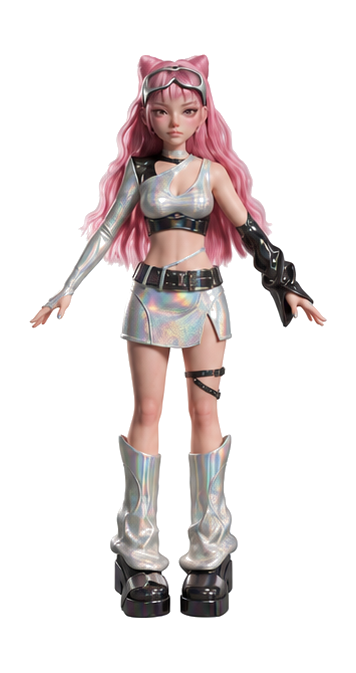
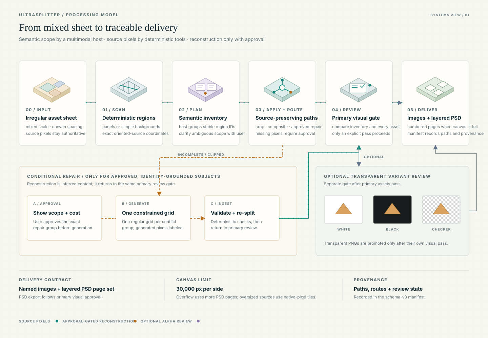

保留真实像素Preserve real pixels
完整主体直接裁切；矩形框重叠但轮廓可分时，用前景掩码清理并重新排版，不把“重新生成”伪装成“提取”。Complete subjects remain source crops. Separable overlaps use foreground masks and clean re-layout, never disguising generation as extraction.
OPEN SOURCE · CONTENT-AWARE SPLITTING
把画面中的角色、道具与灵感，变成真正可用的独立素材。
智能识别，批量拆分。安装
Skill，即可开始。Turn characters, props, and ideas into individual assets you can
actually use.
Content-aware extraction, in batches. Install the
Skill to get started.

THE CASE LIBRARY / 01
从角色设定到道具集合，每一张合图都有自己的拆分方式。
点击原图，看看它如何变成一组独立素材。Character sheets, prop collections, and collages. Each has
its own way to unfold.
Click a source image to explore
the individual assets.
真实输入 · 实际工作流结果Real inputs · Actual workflow results ↙
位置不齐、比例混杂、轮廓相接、主体触边时，平均裁切会直接损坏结果。UltraSplitter 将语义判断与像素处理分开，让每次输出都有明确来源和状态。Equal slicing breaks when spacing, scale, silhouettes and edges stop behaving like a grid. UltraSplitter separates semantic judgment from pixel operations, giving every output a traceable origin and explicit state.
完整主体直接裁切；矩形框重叠但轮廓可分时，用前景掩码清理并重新排版，不把“重新生成”伪装成“提取”。Complete subjects remain source crops. Separable overlaps use foreground masks and clean re-layout, never disguising generation as extraction.
可识别但被截断或遮挡的主体会进入修复组；系统先生成请求包，不主动调用模型。每组最多接收两次结果。Recognizable clipped or occluded subjects enter repair groups. The system prepares a request without calling a model, with no more than two ingested attempts per group.
命名图片、紧凑联系表、坐标、路由依据、来源、审批和评估状态统一写入交付目录与 manifest。Named images, compact contact sheets, coordinates, route evidence, provenance, approvals and evaluations ship together with the manifest.
从分隔线、边框、背景估计和连通域得到稳定候选。Find stable candidates from dividers, frames, background estimates and connected components.
多模态宿主组合区域，并记录完整性、身份置信和处理建议。The multimodal host groups regions and records completeness, identity confidence and treatment.
在原图裁切、原像素重排与生成式重建之间选择明确路径。Choose explicitly between source crop, source composite and generated reconstruction.
只为可识别、满足门槛并得到批准的主体准备补全任务。Prepare completion only for recognizable subjects that pass the gates and receive approval.
检查数量、重复、背景、分辨率、触边、留白和身份一致性。Check count, duplicates, background, resolution, edge contact, margins and identity.

05 / QUICKSTART
通过 Agent Skill 使用完整工作流，或直接运行 Python CLI。核心包不保存供应商密钥，也不主动联网。Use the Agent Skill for the full workflow or run the Python CLI directly. The core package stores no provider credentials and makes no network calls.
npx skills@latest add \
https://github.com/PlevanTem/UltraSplitter/tree/main/.agents/skills/splitting-image-grids-by-contentgit clone https://github.com/PlevanTem/UltraSplitter.git
cd UltraSplitter
python -m pip install -e .
ultrasplit run input.png --name character-views